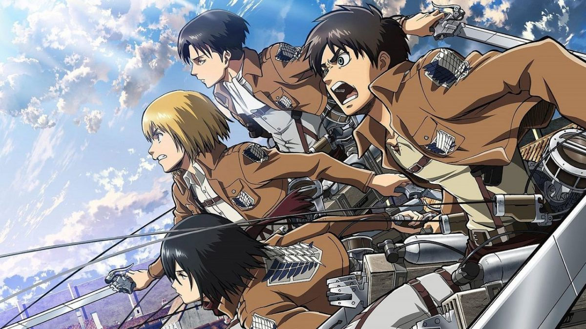
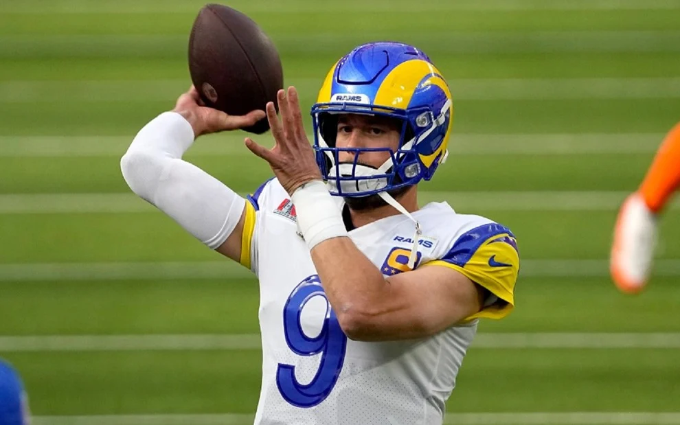

Hobbies
Nessa página, pretendo falar mais detalhadamente sobre as coisas que mais gosto, espero que interesse a vocês 😄
Filmes
Ver filmes se tornou recentemente uma grande paixão minha, a ponto de já me considerar praticamente um recém cinéfilo, vendo filmes e dando notas de 0 a 10 a cada um deles.
Filmes Preferidos:
- Donnie Darko
- Forrest Gump
- Whiplash
- Ilha do Medo
Clique aqui para acompanhar minha nota de cada filme no IMDB.
Séries
Séries que fogem do convencional e colocam dentro dela uma grande construção de personagem são as que mais me interessam, logo, não teria como minha série preferida não ser Breaking Bad, uma obra-prima da televisão.
Séries preferidas:
- Breaking Bad
- Game Of Thrones
- The Boys
Caso ainda não tenha assistido Breaking Bad, clique aqui e descubra porquê você precisa assistir essa série.
Animes
Os animes constroem um mundo artístico gigante e extremamente rico, e quem resolver se aventurar por esse mundo não irá se arrepender.
Claro, como em todo tipo de obra, existe os animes bons e os ruins, mas pode ter certeza que alguns dos bons deixam a maioria das grandes séries televisivas no chinelo! Como é o caso de Shingeki no Kyojin, uma obra que pode ser comparada até à Breaking Bad.
Animes Preferidos:
- Shingeki no Kyojin
- Hunter X Hunter
- Haikyuu
- Code Geass

Clique aqui para acompanhar os animes que assisto no MyAnimeList.
Livros
A leitura faz parte da minha vida à muito tempo, e é algo que sou extremamente apaixonado até hoje, lendo principalmente as coleções.
Dentre meus escritores preferidos se destacam Agatha Christie, a rainha do crime, e George R. R. Martin, o criador dos livros que deram origem à GOT.
Escritores preferidos:
- Agatha Christie
- George R. R. Martin
- Stephen King
- Rick Riordan
Clique aqui para saber por onde começar a ler Agatha Christie.
Música
Me considero bastante eclético, já que ouço um pouco de quase todo estilo de música, mas não há como negar que minha principal paixão é o Rock, do nacional ao internacional, estilo esse que ocupa mais de 24 horas da minha playlist.
Bandas Preferidas:
- Bring Me The Horizon
- Rise Against
- Paramore
- Guns N' Roses
Clique aqui para acessar minha playlist de rock do Spotify.
Jogos
Jogos sempre fizeram parte da minha vida e sempre farão, dentre os vários estilos que existem, dou destaque aos jogos single-player, que muitas vezes trazem uma profundidade da narrativa que supera a muitos filmes, como é o caso de "The Last Of Us: Parte II"
Jogos preferidos:
- The Last Of Us: Part II
- The Last Of Us
- Dark Souls
- The Witcher 3
- Valorant
Clique aqui para acessar o meu perfil da Steam.
Clique aqui para acessar o meu perfil da Riot.
Esportes
Campeonatos entre várias equipes sempre foi algo que me impressionou, por isso, sempre gostei de acompanhar diversos esportes desde criança.
Os esportes americanos foram os que mais me conquistaram, pois eles trazem uma complexidade tremenda, que quando entendida, faz do jogo um espetáculo muito mais impressionante.
Esportes que acompanho:
- Futebol Americano
- Beisebol
- Basquete
- Futebol

Clique aqui para entender como funciona o futebol americano.